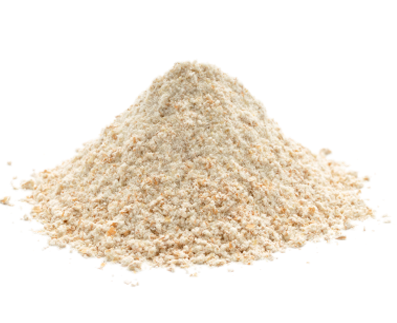

Green Banana Flour
Freeze-dried, gluten-free flour made from 100% Madeira Island green bananas, naturally rich in resistant starch.

Product Specifications
- Source: 100% Madeira Island green bananas
- Process: Freeze-drying (low-temperature dehydration)
- Composition: Gluten-free, low in sugars (<1 g per 100 g), rich in potassium, magnesium, vitamin B and resistant starch
The NatureXtracts freeze-dried green banana flour is manufactured with no artificial colours or preservatives, just 100% Madeira Island bananas. In the freeze-drying process, water is removed from the green bananas at low temperatures, preserving all the nutritional properties of the fruit. The product is processed so gently that no protein or complex molecule is denatured — in the presence of yeast or baking powder, it behaves like an ordinary flour and can be used in the confection of cakes, cookies and bread.
The green banana flour is gluten-free, low in sugars (concentration <1 g per 100 g flour), rich in potassium, magnesium, vitamin B and resistant starch. Unlike other carbohydrates, resistant starch is not digested or absorbed in the small intestine — it is converted by bacteria in the large intestine into butyrate, a source of energy for the body.
Resistant starch action:
- Blocks the proliferation of tumour cells of colon cancer
- Significantly reduces the symptoms of diarrhoea
- Prevents the onset of diabetes
- Promotes weight loss
- Increases the absorption of minerals, particularly calcium
Applications: Cakes, cookies, bread, pastas and sauces. As a dietary supplement, add one tablespoon to milkshakes, drinks, yogurts or soups.